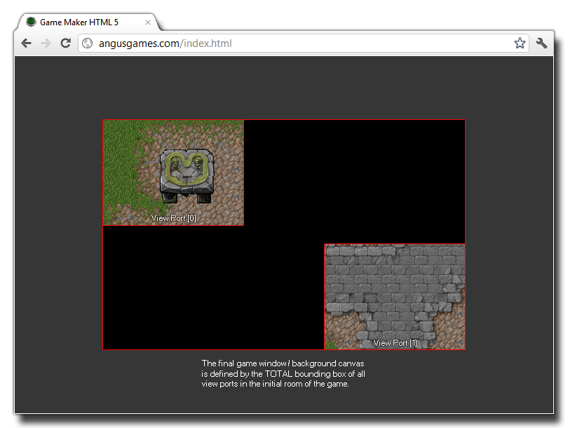
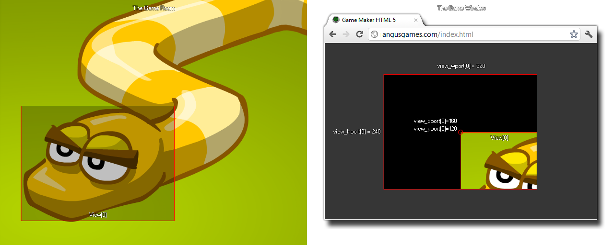

view_xport[0...7]
Returns: Real
With this variable you can get or set the x position of the view
port. The view port is the area on the screen where the view is
drawn. Now, the default for GameMaker: Studio is that the
game window (or background canvas) is the same size as the room,
however when you activate views, this behaviour changes and the
total size of the bounding box for all view ports is used.
So, if you have two different view ports at two different
positions, the total area that they cover defines the size of the
game window. The following image illustrates this:

If you only have one view active (and so only one view port)
setting the x or y value of the port can have some interesting
effects but is not normally practical (see the image below) and so
it is better to maintain the x and y position as (0,0).

view_xport[0] = 0; view_yport[0] = 0;
The above code resets the position of view port[0] to the (0,0) position (top left hand corner) of the display.